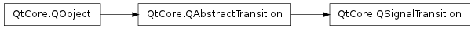

QSignalTransition ¶

Note
This class was introduced in Qt 4.6
Synopsis ¶
Functions ¶
- def senderObject ()
- def setSenderObject (sender)
- def setSignal (signal)
- def signal ()
Detailed Description ¶
The PySide.QtCore.QSignalTransition class provides a transition based on a Qt signal.
Typically you would use the overload of QState.addTransition() that takes a sender and signal as arguments, rather than creating PySide.QtCore.QSignalTransition objects directly. PySide.QtCore.QSignalTransition is part of The State Machine Framework .
You can subclass PySide.QtCore.QSignalTransition and reimplement PySide.QtCore.QSignalTransition.eventTest() to make a signal transition conditional; the event object passed to PySide.QtCore.QSignalTransition.eventTest() will be a QStateMachine.SignalEvent object. Example:
class CheckedTransition : public QSignalTransition { public: CheckedTransition(QCheckBox *check) : QSignalTransition(check, SIGNAL(stateChanged(int))) {} protected: bool eventTest(QEvent *e) { if (!QSignalTransition::eventTest(e)) return false; QStateMachine::SignalEvent *se = static_cast<QStateMachine::SignalEvent*>(e); return (se->arguments().at(0).toInt() == Qt::Checked); } }; ... QCheckBox *check = new QCheckBox(); check->setTristate(true); QState *s1 = new QState(); QState *s2 = new QState(); CheckedTransition *t1 = new CheckedTransition(check); t1->setTargetState(s2); s1->addTransition(t1);
- class PySide.QtCore. QSignalTransition ( arg__1 [ , arg__2=None ] ) ¶
- class PySide.QtCore. QSignalTransition ( sender , signal [ , sourceState=None ] )
- class PySide.QtCore. QSignalTransition ( [ sourceState=None ] )
-
Parameters: - sender – PySide.QtCore.QObject
- sourceState – PySide.QtCore.QState
- signal – str
- arg__1 – PyObject
- arg__2 – PySide.QtCore.QState
Constructs a new signal transition associated with the given signal of the given sender , and with the given sourceState .
Constructs a new signal transition with the given sourceState .
- PySide.QtCore.QSignalTransition. senderObject ( ) ¶
-
Return type: PySide.QtCore.QObject This property holds the sender object that this signal transition is associated with.
- PySide.QtCore.QSignalTransition. setSenderObject ( sender ) ¶
-
Parameters: sender – PySide.QtCore.QObject This property holds the sender object that this signal transition is associated with.
- PySide.QtCore.QSignalTransition. setSignal ( signal ) ¶
-
Parameters: signal – PySide.QtCore.QByteArray This property holds the signal that this signal transition is associated with.
- PySide.QtCore.QSignalTransition. signal ( ) ¶
-
Return type: PySide.QtCore.QByteArray This property holds the signal that this signal transition is associated with.